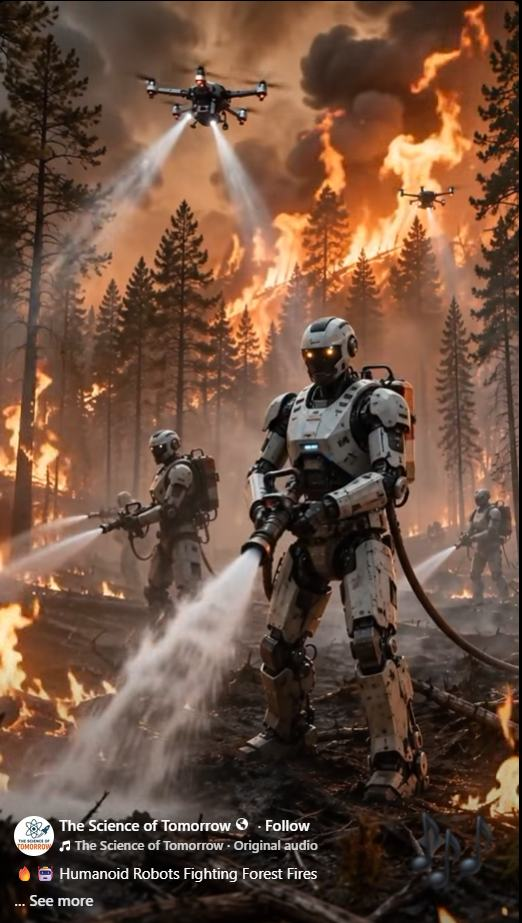

ARTICLE #014 · NOVEMBER 2026
Robots on the Front Lines: Going Where Humans Cannot Safely Go
Using advanced robots to protect people in hazardous environments.

Concept illustration shared from The Science of Tomorrow. The depicted humanoid firefighting robots are illustrative, not evidence of an operational deployed system.
A Better Purpose for Intelligent Machines
Every year, firefighters enter burning forests, rescue workers approach unstable buildings, divers descend into hazardous waters, and technicians enter places where toxic gases, radiation, extreme temperatures, or collapsing structures can kill. These people deserve every possible protection. The future of robotics offers a powerful idea: send capable machines into the most dangerous places first, while human experts direct the mission from safer positions.
Terra Nova Development should champion robots that protect human life, expand our capacity to respond to disasters, and make dangerous work less dangerous.
Fighting Wildfires Without Sacrificing Firefighters
Imagine a coordinated team of rugged ground robots advancing into a wildfire zone. Some map hotspots and carry hoses; others clear debris, inspect structures, or deliver emergency supplies. Above them, drones detect heat signatures, relay communications, and help incident commanders understand how the fire is moving.
Robots could work near intense heat only within their engineered limits. Heat-resistant shielding, active cooling, remote operation, and replaceable components would be essential. No robot is immune to fire, smoke, falling trees, or loss of communications. The goal is not to eliminate human firefighters, but to reduce their exposure and give them better information and tools.
From Arctic Cold to Industrial Furnaces
Different machines can be designed for different extremes. Cold-weather robots might inspect remote pipelines, restore communications, or assist search teams in blizzards. High-temperature robots could inspect furnaces, respond to industrial fires, or approach damaged facilities.
These environments impose real engineering constraints: batteries lose performance in cold weather; seals, lubricants, electronics, and sensors can fail at temperature extremes; and insulation adds weight. Specialized designs and testing matter more than the appearance of a human-shaped machine.
Underwater, Underground, and in the Air
Underwater remotely operated vehicles already help inspect infrastructure and perform tasks beyond safe human diving limits. Future systems could expand their roles in flood rescue, dam inspection, offshore maintenance, and environmental monitoring. Aerial drones can survey wildfire fronts, search disaster areas, and reach terrain inaccessible to ground crews. Underground robots could inspect tunnels, mines, and unstable spaces after earthquakes or explosions.
No single robot needs to do everything. A coordinated fleet of wheeled, tracked, walking, swimming, and flying machines can be more effective than one universal design.
Disaster Response and Hazardous Materials
After a chemical spill or building collapse, the first question should be whether a robot can investigate before a person enters. Equipped with cameras, gas detectors, thermal imaging, radiation sensors, and manipulators, machines could locate hazards, carry equipment, and help rescuers choose safer routes.
In nuclear facilities, contaminated industrial sites, and other high-risk locations, remote systems can reduce exposure. Human oversight remains critical, especially when the situation is uncertain or a mistake could worsen the emergency.
An Intelligent Team, Not an Uncontrolled Army
Artificial intelligence could help coordinate assignments, combine sensor readings, and suggest safe routes. But life-and-death decisions require clear responsibility. Systems should include human command authority, secure communications, fail-safe behavior, logs, testing, and independent safety reviews. Robots must not be assumed reliable simply because they are labeled 'AI-powered.'
For Terra Nova, a sensible approach is to begin with practical, measurable tasks: remote inspection, mapping, delivery, and hazard detection. More autonomous physical operations should follow only after rigorous validation.
A Terra Nova Development Initiative
Terra Nova could bring together engineers, firefighters, emergency managers, universities, manufacturers, and public agencies to develop an open, public-benefit robotics program. A first pilot might pair commercially available drones with a teleoperated ground robot for simulated wildfire and disaster-response exercises.
Success would be measured in reduced responder exposure, useful information delivered, reliability, cost, and the ability to work safely alongside existing crews. Funding could come from research grants, philanthropic support, and partnerships with local and regional emergency services.
The Future We Should Choose
The greatest achievement of robotics will not be machines that resemble human beings. It will be machines that protect human beings.
Let robots enter the burning forest, the freezing storm, the flooded tunnel, and the contaminated building whenever they can do so more safely. Let human beings provide judgment, compassion, leadership, and care.
Technology should not simply make work faster. It should make life safer—and its benefits should be shared by everyone.
There is no them. There is only us. We are one.
Terra Nova Development, Inc. • buymeacoffee.com/billbuttso